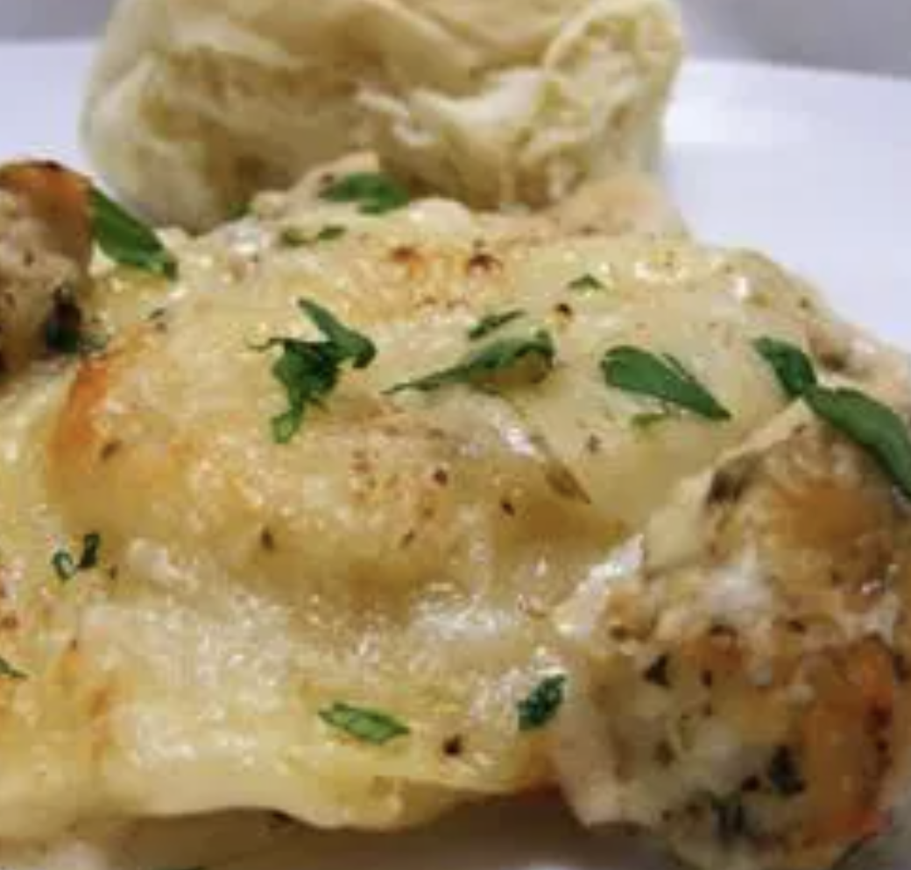

K-Dub's Alfredo Ravioli Bake

A rich, tantalizing dish that will leave you wanting more, even if you're full! You can use
all different kinds of ravioli, meats, and sauces. A versatile dish for what you have on hand. It can also be made ahead of time!
Ingredients
- 1 (25 ounce) package frozen cheese ravioli
- 2 tablespoons butter
- 3 skinless, boneless chicken breasts, cut into 1-inch piece
- 2 tablespoons Italian seasoning
- 1 (16 ounce) jar prepared Alfredo sauce
- 2 cups shredded mozzarella cheese
- salt and ground black pepper to taste
- ¼ cup grated Parmesan cheese
Directions
- Preheat oven to 375 degrees F (190 degrees C). Grease a 9x13-inch baking dish.
- Bring a large pot of lightly salted water to a boil; cook the rotini at a boil until tender yet firm to the bite,
about 8 minutes; drain.
- Cook and stir sausage in a skillet over medium heat until browned and crumbly, 5 to 10 minutes.
Drain sausage on paper towels and reserve 2 tablespoons grease in the skillet. Add oil to grease in the skillet; cook and stir onion,
garlic, and red pepper flakes in the hot oil-grease until onion is soft, about 3 minutes
- Stir chicken broth, pumpkin, bacon, Italian seasoning, and salt into onion mixture; bring to a boil. Lower heat and simmer for 5 minutes.
Stir cream and sausage into broth mixture and simmer until creamy and thickened, about 5 minutes. Add rotini and gently toss.
Transfer mixture to the prepared baking dish and top with Parmesan cheese.
- Bake in the preheated oven until bubbling and golden brown, about 35 minutes.